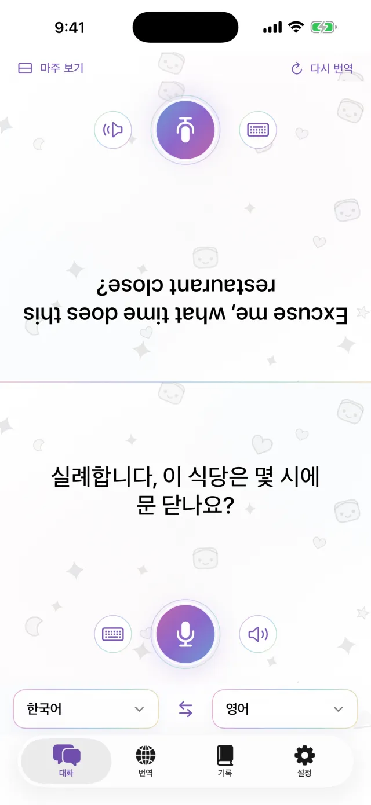
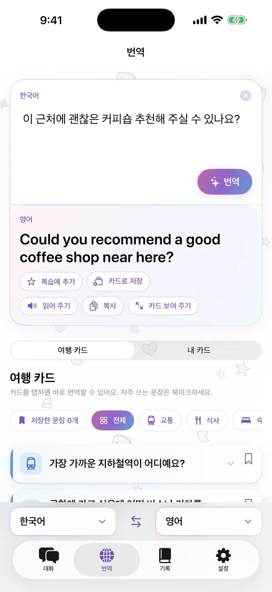
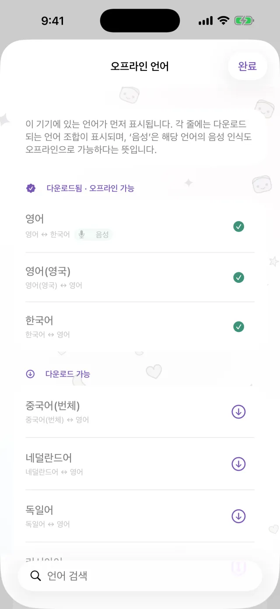
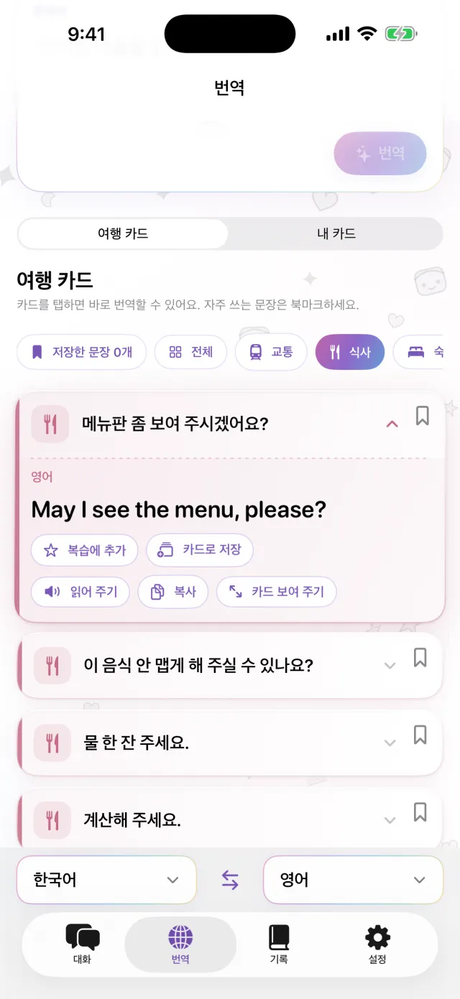
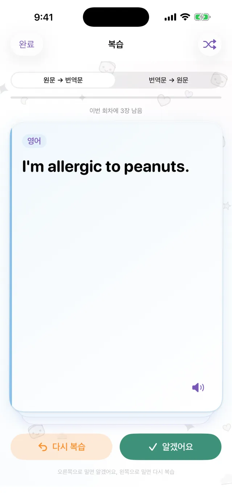

iPhone 번역 앱
iPhone 번역 앱
iPhone을 둘 사이에
두기만 하세요.
마이크를 누르고 말하면 화면 반대쪽, 상대방 쪽에 번역이 나타납니다. 상대방이 답할 때도 똑같이 쓰면 됩니다. 언어를 미리 내려받아 두면 인터넷 연결 없이도 쓸 수 있습니다.
App Store에 곧 출시됩니다- 약 20개 언어
- 다운로드 후 오프라인 사용
- 회원 가입 없음

입력
소리 내기 어려우면 글자로 입력하세요.
조용한 곳이나 상대방이 너무 빨리 말할 때는 글자로 입력하면 됩니다. 번역문을 화면 가득 크게 띄워 상대방에게 보여 줄 수 있습니다.
- 복사하거나 소리 내어 읽어 주기
- 두 언어를 한 번에 서로 바꾸기

오프라인
인터넷이 없어도 번역합니다
번역, 음성 인식, 읽어 주기까지 모두 iPhone 안에서 처리합니다. 여행 전에 필요한 언어를 내려받아 두면 비행기 안이나 유심을 사기 전에도 쓸 수 있습니다. 말한 내용은 서버로 전송되지 않고, 녹음도 저장하지 않습니다.

문장 카드
매번 하는 말은 카드로 저장하세요
호텔 주소, 음식 알레르기, 찾는 역 이름 같은 문장을 카드로 저장해 두면 다시 입력하지 않아도 됩니다. 카드를 누르면 상대방의 언어로 번역됩니다. 교통, 식사, 숙박, 쇼핑용 기본 카드도 들어 있습니다.

Pro
번역한 문장을 다시 살펴보세요
번역 기록은 날짜별로 남습니다. 기억해 두고 싶은 문장은 학습 카드로 만들 수 있습니다. 이 기능은 Pro에서 사용할 수 있습니다.

이럴 때 씁니다
- 작은 식당에서 주문할 때
- 택시 기사님께 주소를 말할 때
- 약국에서 알레르기를 설명할 때
- 호텔 프런트에 짐을 맡길 때
- 길을 물어볼 때
30초로 보기
이 영상은 에어플레인 모드를 켠 상태로 찍었습니다.
기본 정보
| 언어 | 약 20개 (Apple이 기기 내에서 번역을 지원하는 언어) |
|---|---|
| 오프라인 | 가능. 언어를 내려받은 뒤 |
| 음성 입력 | 가능. 일부 언어는 글자 입력만 됩니다 |
| 계정 | 필요 없음 |
| 가격 | 무료. Pro는 별도 요금 (아래 참고) |
| 필요 환경 | iOS 18 이상이 설치된 iPhone |
- 처음 한 번은 언어를 내려받기 위해 인터넷 연결이 필요합니다.
- 가격은 App Store에서 사용 중인 지역의 통화로 표시됩니다.
무료와 Pro
무료
- 마주 보고 대화
- 글자 입력과 전체 화면 보여 주기
- 오프라인 번역
- 여행 카드와 내 카드 3개
- 작은 배너 광고
Pro
- 광고 없음
- 카드 개수 제한 없음
- 번역 기록과 학습 카드
주간, 월간 또는 한 번만 결제할 수 있습니다.